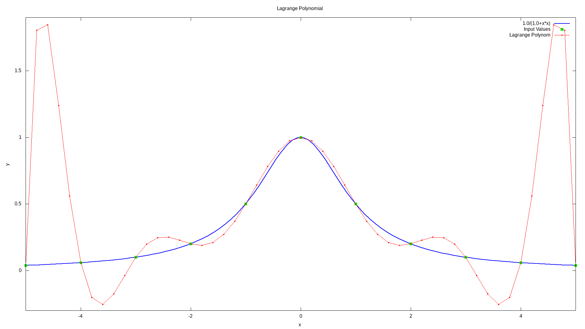

Lagrange’s Interpolation¶
Lagrange polynomial¶
In numerical analysis, Lagrange polynomials are used for polynomial interpolation. For a given set of points \((x_j, y_j)\) with no two \(x_j\) values equal, the Lagrange polynomial is the polynomial of lowest degree that assumes at each value \(x_j\) the corresponding value \(x_j\), so that the functions coincide at each point.
Definition¶
Given a set of \(k+1\) data points \((x_0, y_0),\dots,(x_j, y_j),\dots,(x_k, y_k)\) where no two \(x_j\) are the same, the interpolation polynomial in the Lagrange form is a linear combination \(L(x):=\sum_{j=0}^{k} y_{j} \ell_{j}(x)\), of Lagrange basis polynomials
where \(0 \leq j \leq k\). Note how, given the initial assumption that no two \(x_j\) are the same, \(x_j - x_m \neq 0\), so this expression is always well-defined. The reason pairs \(x_i = x_j\) with \(y_i \neq y_j\) are not allowed is that no interpolation function \(L\) such that \(y_i=L(x_i)\) would exist; a function can only get one value for each argumetn \(x_i\). On the other hand, if also \(y_i = y_j\), then those two points would actually be one single point.
For all \(i \neq j\), \(\ell(x)\) includes the term \((x-x_i)\) in the numerator, so the whole pruduct will be zero at \(x = x_i\):
On the other hand,
In other words, all basis polynomials are zero at \(x = x_i\), except \(\ell_i(x)\), for which it holds that \(\ell_i(x_i) = 1\), because it lacks the \((x - x_i)\) term.
It follows that \(\ell_i(x_i) = y_i\), so at each point \(x_i\), \(L(x_i) = y_i + 0 + 0 + \dots + 0 = y_i\), showing that \(L\) interpolates the function exactly.
Runge’s example¶
The function \(f(x) = \frac{1}{1+x^2}\) cannot be interpolated accurately on \([−5, 5]\) using a tenth-degree polynomial (dashed curve) with equally-spaced interpolation points. This example that illustrates the difficulty that one can generally expect with high-degree polynomial interpolation with equally-spaced points is known as Runge’s example.
{kind=link}
Usage¶
Imagine that we have following points and we want to build a Lagrange polynomial with this points:
X |
Y |
|---|---|
2.0 |
10.0 |
3.0 |
15.0 |
5.0 |
25.0 |
8.0 |
40.0 |
12.0 |
60.0 |
Then the code will look like this:
// example_lagrange_polynomial.cpp
#include <iostream>
#include "../src/numerary.hpp" // Numerary library
using namespace std;
using namespace numerary;
/* The main function */
int main() {
const int N = 5;
double *X = new double[N], *Y = new double[N];
double y, x;
// Points to interpolate
X[0] = 2.0; Y[0] = 10.0;
X[1] = 3.0; Y[1] = 15.0;
X[2] = 5.0; Y[2] = 25.0;
X[3] = 8.0; Y[3] = 40.0;
X[4] = 12.0; Y[4] = 60.0;
// Point where we want to get value of Lagrange Polynomial
x = 7.0;
y = Numerary::lagrange_polynomial(X, Y, x, N);
cout << "y(" << x << ") = " << y << endl;
delete[] X;
delete[] Y;
return 0;
}